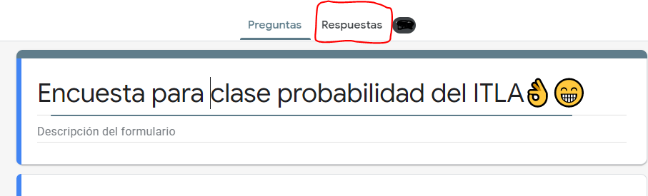

Generate Stadistic Tables With a CSV File of Google Form Poll
Made with ❤️ by Brandox
Steps
I did this aplication for to generate the stadistic tables for the probability and Stadistic class from ITLA, but i dont want to do all the calculates manually, then i used my programing powers üôèüòÅ
You can get the .csv file of your poll following the steps:

then
then